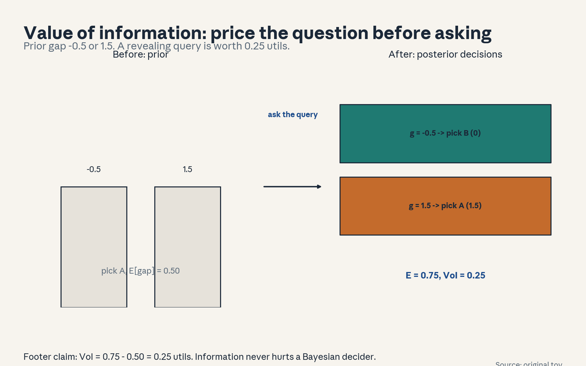
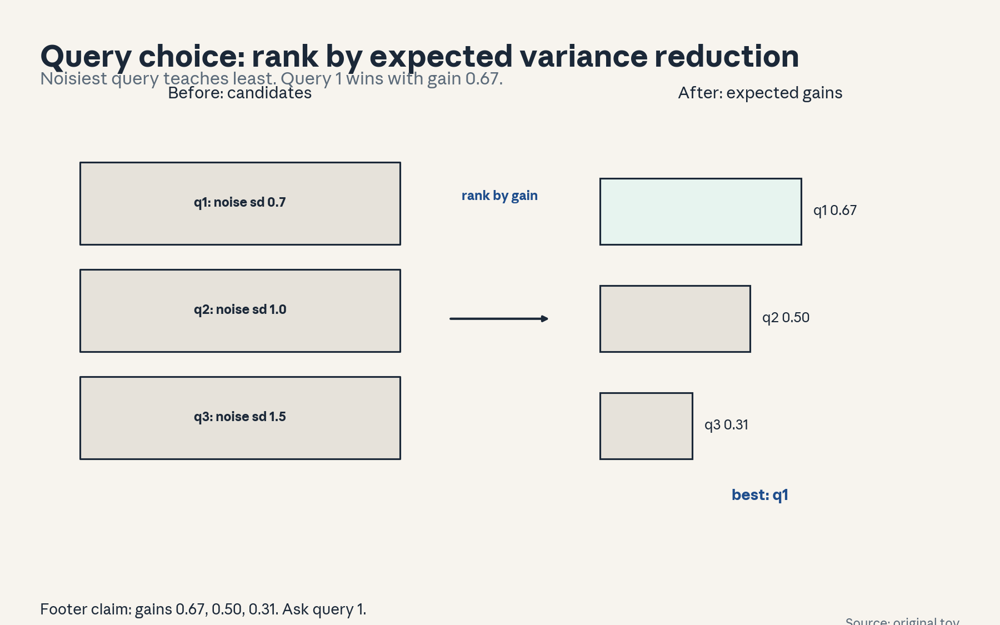
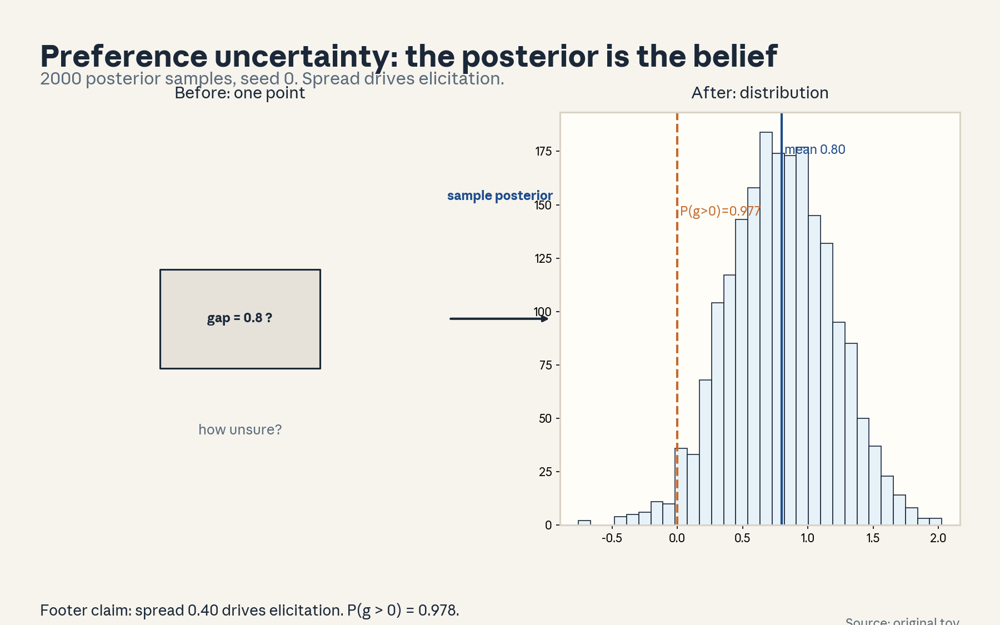
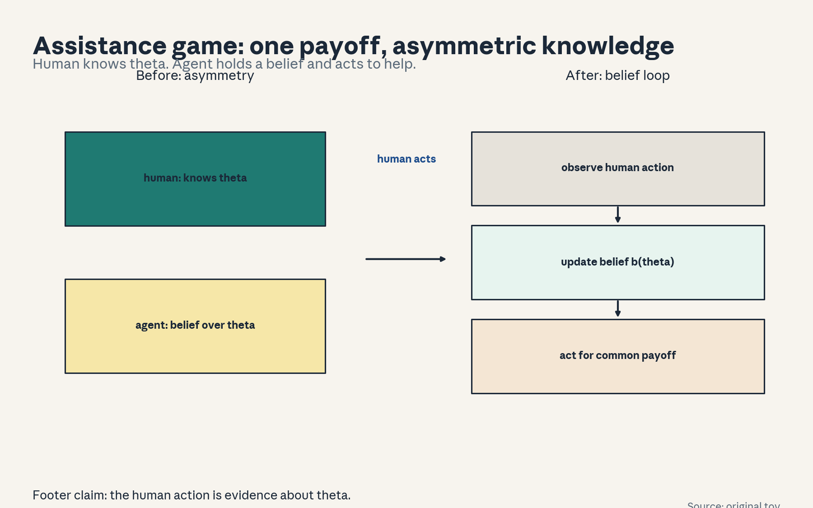
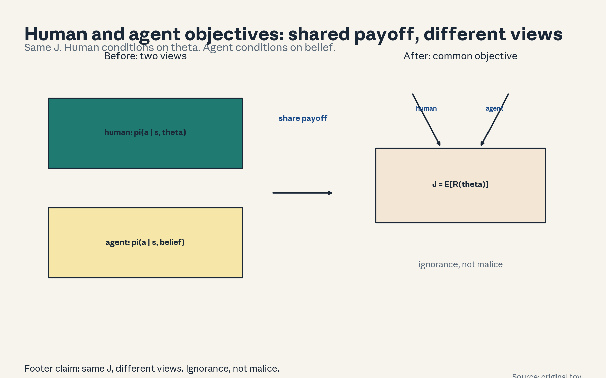
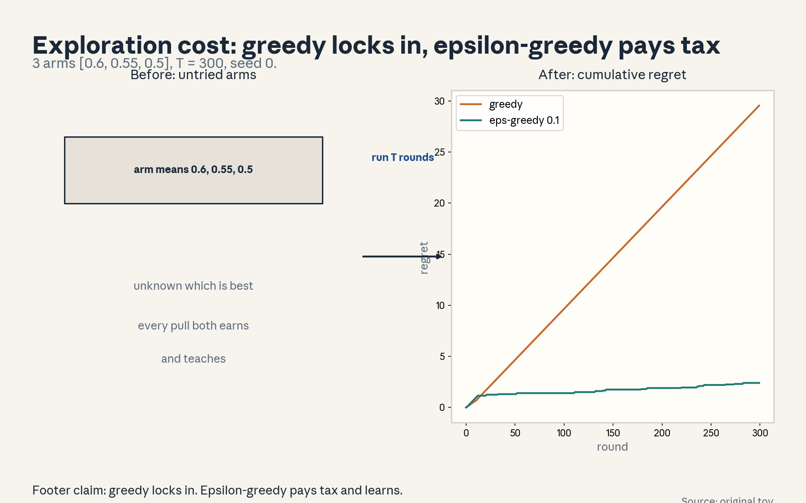
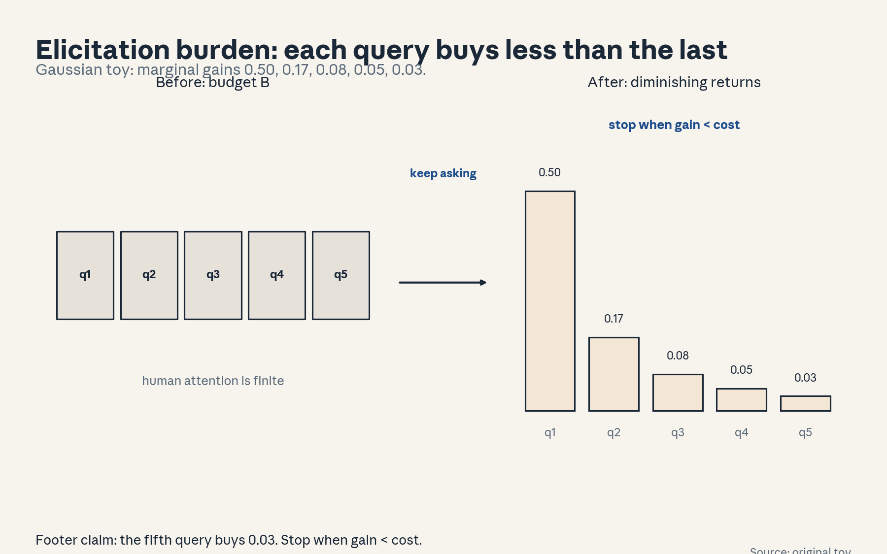

U06 · Active elicitation and assistance games
U06: Active elicitation and assistance games
Prerequisites: P06 (probability), P17 (RL), P18 (Bayesian). Local remediation opens this lesson.
Provenance
Sessions S10 (“Active elicitation for LLMs, and case studies”, 26 Oct 2026) and S11 (“Assistance games. Assisted vs. contextual bandits”, 28 Oct 2026) are PLANNED. All twelve concepts are taught as independent theory: PLANNED / SOURCE ATTRIBUTION PENDING.
Local remediation: value of information, contextual bandits, partial observability
Value of information: VoI(q) = E_{answer}[max_a E[u_a | answer]] - max_a E[u_a]. It prices one question in the units of the decision payoff. A query is worth asking when its VoI exceeds its elicitation cost.
Contextual bandit: each round shows a context x, the agent picks an arm a, and earns reward r(x, a). The policy maps contexts to arms. Feedback arrives only for the chosen arm.
Partial observability: the agent does not see the world state. In assistance the hidden state is the human’s objective theta. The agent holds a belief b(theta) and updates it on the human’s behavior.
Russian-doll ladder for the major mechanism (value of information)
- Shell 0: Which question should we ask the human next, and is it worth the bother?
- Shell 1: Toy: utility gap g in {-0.5, 1.5}, prior 0.5 each. One query reveals g.
- Shell 2: VoI = expected best utility after the answer minus best utility now.
- Shell 3: Rule: ask the query with the largest VoI minus elicitation cost.
- Shell 4: Compute VoI = 0.25 for the toy. Implement the expectation over answers.
- Shell 5: Check: VoI >= 0 always for a Bayesian decider. Check: VoI = 0 when the answer cannot change the decision.
- Shell 6: Change one factor: noisy answers. Predict VoI falls, then measure it.
- Shell 7: Counterexample: a query with VoI 0.25 but elicitation cost 0.4. Net value negative. Do not ask.
- Shell 8: Compare VoI with expected information gain: decision-relevant versus pure uncertainty reduction.
- Shell 9: Extension: does VoI-ranked querying beat random querying on held-out preference accuracy per query? Falsifiable: no win means the answer model is misspecified.
- Shell 10: Production: query budget and human attention are the scarce resources. VoI prices them in decision units.
Not-yet-understood dependency list
- CIRL solution methods beyond the formulation taught here.
- Human cognitive models of question answering (treated as a noise channel).
- Large-scale annotation operations (covered conceptually only).
cs329h-U06-C01: value of information
Contract 1. Source mapping, scope, objectives, dependencies. PLANNED / SOURCE ATTRIBUTION PENDING (S10). Objective: define value of information and compute it on a toy. Depends on P06, P18.
Contract 2. Motivating question and tiny toy. Question: how much is one more question worth before we hear the answer? Toy: utility gap g in {-0.5, 1.5}, prior 0.5 each. One query reveals g.
Contract 3. Plain-language mental model. VoI is the expected improvement in the final decision from asking. It prices a question in the same units as the decision payoff.
Contract 4. Variables, units, shapes, assumptions. VoI(q) = E_y[max_a E[u(a) | y]] - max_a E[u(a)]. Units: utils. Assumption: the decider re-optimizes on the posterior.
Contract 5. Justified derivation or mechanism. The outer expectation runs over answers not yet seen. The inner max re-optimizes after each possible answer. VoI >= 0 because ignoring the answer is always allowed.
Contract 6. Computed numerical example. Prior mean gap 0.5, so choose A: expected gap 0.5. After the query: g = -0.5 -> pick B (0), g = 1.5 -> pick A (1.5). Expected 0.75. VoI = 0.25. Same numbers as figure u06_f01.
Contract 7. Algorithm and minimal implementation. Enumerate answers, compute the posterior best action per answer, average. Five lines of NumPy.
Contract 8. Correctness checks and expected output. Check: VoI >= 0. Check: VoI = 0 when the answer cannot flip the decision. Expected: 0.25.
Contract 9. Complexity, memory, statistical efficiency, stability, costs. O(answers x actions). The cost is conceptual: the answer model must be honest.
Contract 10. Nearest alternatives and selection boundaries. Alternative: expected information gain (variance reduction). VoI is decision-relevant, info gain is not. Choose VoI when a decision follows. Choose info gain for pure learning.
Contract 11. Failure case, broken assumption, counterexample. Failure: the answer model is overconfident, so realized value falls below computed VoI. Counterexample: the query “reveals” g but the human answers at random. True VoI 0, computed 0.25.
Contract 12. Research reading and falsifiable extension. Extension: test whether VoI-ranked queries beat random queries on held-out preference accuracy per query. Falsifiable: no win means the answer model is misspecified.
Contract 13. Assessment. Breadth: write the VoI formula. Oral ladder through the 0.25. Transfer: a doctor ordering a test. What is VoI? Failure diagnosis: computed VoI high, realized gain zero. Explain. Counterfactual: what if answers are free? Research: VoI under model misspecification.
Contract 14. Lab and exercises. Lab U06 task 1 computes VoI on the toy. Exercises: (E1) write the formula. (E2) compute the 0.25. (E3) construct the zero-VoI case. Keys in answer_keys/u06_keys.md.
Contract 15. Visual units, provenance, accessibility, audit rows. Figure visuals/u06_f01.png: lesson plate, source original toy, closed form, alt text “Prior bars on gap values -0.5 and 1.5. Arrow labeled ask the query. Posterior decisions with expected value 0.75 and VoI 0.25.” Audit: before state prior, after state posterior decisions, rule named. No conflict.

cs329h-U06-C02: query choice
Contract 1. Source mapping, scope, objectives, dependencies. PLANNED / SOURCE ATTRIBUTION PENDING (S10). Objective: rank candidate queries by expected gain. Depends on C01.
Contract 2. Motivating question and tiny toy. Question: three possible questions, one slot. Which one? Toy: prior gap N(0,1), three queries with noise sd 0.7, 1.0, 1.5.
Contract 3. Plain-language mental model. Rank by expected variance reduction. The noisiest question teaches the least. Pick the top of the ranking.
Contract 4. Variables, units, shapes, assumptions. Info gain I(q) = Var_prior - E[Var_post]. Units: utils squared. Assumption: Gaussian prior and Gaussian noise.
Contract 5. Justified derivation or mechanism. Posterior variance after one Gaussian observation: prior var 1, noise var s^2 gives s^2/(1+s^2). Gain = 1/(1+s^2). For s = 0.7: 0.671. s = 1.0: 0.500. s = 1.5: 0.308.
Contract 6. Computed numerical example. Gains: 0.67, 0.50, 0.31. Query 1 wins. Same numbers as figure u06_f02.
Contract 7. Algorithm and minimal implementation. Compute the posterior variance per candidate, rank. Five lines.
Contract 8. Correctness checks and expected output. Check: gains positive and decreasing in noise. Expected: the ranking q1 > q2 > q3.
Contract 9. Complexity, memory, statistical efficiency, stability, costs. O(candidates). The hard part is the noise model per query type.
Contract 10. Nearest alternatives and selection boundaries. Alternative: VoI (needs a downstream decision). Alternative: random queries (baseline). Choose info gain for pure preference learning. Choose VoI when a product decision follows.
Contract 11. Failure case, broken assumption, counterexample. Failure: the noise model is wrong, the “best” query is unanswerable by humans. Counterexample: s = 0.01 on paper, but humans answer at chance.
Contract 12. Research reading and falsifiable extension. Extension: test whether info-gain ranking beats random on held-out accuracy per query. Falsifiable: no win means the noise model is wrong.
Contract 13. Assessment. Breadth: write the gain formula. Oral ladder through the ranking. Transfer: which survey question goes first? Failure diagnosis: the top-ranked query teaches nothing. Explain. Counterfactual: what if all queries share one noise level? Research: non-Gaussian gains.
Contract 14. Lab and exercises. Lab U06 task 2 ranks the queries. Exercises: (E1) write the gain formula. (E2) compute the three gains. (E3) argue the failure case. Keys in answer_keys/u06_keys.md.
Contract 15. Visual units, provenance, accessibility, audit rows. Figure visuals/u06_f02.png: lesson plate, source original toy, closed form, alt text “Three query boxes with noise sd 0.7, 1.0, 1.5. Arrow labeled rank by expected gain. Bars 0.67, 0.50, 0.31 with query 1 marked best.” Audit: before state candidates, after state ranking, rule named. No conflict.

cs329h-U06-C03: preference uncertainty
Contract 1. Source mapping, scope, objectives, dependencies. PLANNED / SOURCE ATTRIBUTION PENDING (S10). Objective: represent uncertainty over preferences as a posterior. Depends on P18, U03.
Contract 2. Motivating question and tiny toy. Question: how unsure are we about a preference? Toy: posterior over gap g ~ N(0.8, 0.16), 2000 samples, seed 0.
Contract 3. Plain-language mental model. The posterior is the current belief about the preference. Its spread drives elicitation: wide spread means ask more.
Contract 4. Variables, units, shapes, assumptions. Samples g_i from p(g | data). Mean 0.8, sd 0.4. Assumption: the likelihood and prior are trusted.
Contract 5. Justified derivation or mechanism. Uncertainty splits into noise (answer flips) and parameter uncertainty (little data). More queries shrink the latter, not the former.
Contract 6. Computed numerical example. Sample mean 0.79, sample sd 0.40, P(g > 0) = 0.978 (seed 0, n = 2000). Same numbers as figure u06_f03.
Contract 7. Algorithm and minimal implementation. Draw posterior samples, histogram them, report quantiles. Ten lines.
Contract 8. Correctness checks and expected output. Check: the sample mean matches the analytic 0.8 within Monte Carlo error. Expected: the histogram in u06_f03.
Contract 9. Complexity, memory, statistical efficiency, stability, costs. O(samples). Sampling is cheap, the posterior itself is the expensive object.
Contract 10. Nearest alternatives and selection boundaries. Alternative: point estimate plus Laplace approximation. Alternative: bootstrap. Choose the full posterior when decisions need tail probabilities. Choose Laplace for speed.
Contract 11. Failure case, broken assumption, counterexample. Failure: the posterior is overconfident because the likelihood missed a bias. Counterexample: all samples say g > 0 but the true gap is negative under systematic annotation bias.
Contract 12. Research reading and falsifiable extension. Extension: test calibration of P(g > 0) on held-out pairs. Falsifiable: miscalibration means the uncertainty model is wrong.
Contract 13. Assessment. Breadth: what does the posterior spread mean? Oral ladder through P(g > 0) = 0.977. Transfer: poll margins. Failure diagnosis: the posterior is narrow but predictions fail. Explain. Counterfactual: what if data were infinite? Research: uncertainty under misspecification.
Contract 14. Lab and exercises. Lab U06 task 3 samples the posterior. Exercises: (E1) state the sampling setup. (E2) compute P(g > 0). (E3) separate noise from parameter uncertainty. Keys in answer_keys/u06_keys.md.
Contract 15. Visual units, provenance, accessibility, audit rows. Figure visuals/u06_f03.png: lesson plate, source original toy, seed 0, alt text “Histogram of 2000 posterior gap samples. Mean line at 0.79, sd 0.40, P(g > 0) = 0.978 marked.” Audit: before state prior belief, after state posterior spread, rule named. No conflict.

cs329h-U06-C04: assistance formulation
Contract 1. Source mapping, scope, objectives, dependencies. PLANNED / SOURCE ATTRIBUTION PENDING (S11). Objective: state the assistance game formulation. Depends on P17.
Contract 2. Motivating question and tiny toy. Question: how do we formalize “help me” when the helper does not know the goal? Toy: human knows the reward R, agent does not. Both share the payoff.
Contract 3. Plain-language mental model. An assistance game: two players, common payoff. The human knows the reward function. The agent infers it from the human behavior and acts to help.
Contract 4. Variables, units, shapes, assumptions. State s, human action a_H, agent action a_A, reward R(s, a_H, a_A, theta), theta known to the human only. Common payoff: both maximize E[R].
Contract 5. Justified derivation or mechanism. The human actions are observations about theta. The agent keeps a belief over theta and acts to maximize expected common reward. This is a POMDP with the human in the loop.
Contract 6. Computed numerical example. Toy: theta in {tea, coffee}, prior 0.5. Human reaches for the left cupboard (evidence for tea). Agent belief shifts to 0.727, agent brews tea. Expected common reward rises from 0.5 to 0.727.
Contract 7. Algorithm and minimal implementation. Belief update on theta given the human action, then the expected-reward action. Pseudocode, ten lines.
Contract 8. Correctness checks and expected output. Check: the belief sums to 1. Check: a fully revealing human action collapses the belief. Expected: the 0.5 -> 0.727 shift.
Contract 9. Complexity, memory, statistical efficiency, stability, costs. Exact solution is intractable (POMDP). The formulation is the contribution, approximations do the work.
Contract 10. Nearest alternatives and selection boundaries. Alternative: the agent optimizes a fixed proxy reward (no inference). Alternative: ask the human directly (pure elicitation). Choose inference when human behavior is informative and cheap. Choose asking when it is not.
Contract 11. Failure case, broken assumption, counterexample. Failure: the human is not optimal (bounded rationality, U08), so the agent misreads the evidence. Counterexample: the human reaches left out of habit, not preference. The agent “helps” wrongly.
Contract 12. Research reading and falsifiable extension. Extension: test whether belief-based assistance beats proxy optimization on a synthetic human with known theta. Falsifiable: no win means the inference adds nothing.
Contract 13. Assessment. Breadth: state the information asymmetry in one sentence. Oral ladder through the belief shift. Transfer: a junior assistant and a busy manager. Failure diagnosis: the agent helps wrongly though the human acted clearly. Explain. Counterfactual: what if the human were fully transparent? Research: assistance with bounded-rational humans.
Contract 14. Lab and exercises. Lab U06 task 4 implements the belief update. Exercises: (E1) name who knows what. (E2) compute the 0.727. (E3) argue the habit failure. Keys in answer_keys/u06_keys.md.
Contract 15. Visual units, provenance, accessibility, audit rows. Figure visuals/u06_f04.png: architecture plate, source original toy, alt text “Human box labeled knows theta. Agent box labeled belief over theta. Arrow labeled human action as evidence. Both point to a common payoff box.” Audit: before state asymmetry, after state belief loop, rule named. No conflict.

cs329h-U06-C05: human/agent objectives
Contract 1. Source mapping, scope, objectives, dependencies. PLANNED / SOURCE ATTRIBUTION PENDING (S11). Objective: separate the shared objective from each player information and actions. Depends on C04.
Contract 2. Motivating question and tiny toy. Question: if both want the same thing, why is assistance hard? Toy: same tea/coffee setup. Human acts with full knowledge, agent with a belief.
Contract 3. Plain-language mental model. The objective is shared, but the information and the action sets differ. The human knows theta and acts in the world. The agent sees the human and acts with partial knowledge. Misalignment comes from ignorance, not malice.
Contract 4. Variables, units, shapes, assumptions. Common payoff J = E[R(theta)]. Human policy pi_H(a | s, theta). Agent policy pi_A(a | s, belief). Same J, different conditioning.
Contract 5. Justified derivation or mechanism. Because the conditioning differs, the optimal agent action differs from what the human would do. The agent trades acting on its best guess against gathering more evidence.
Contract 6. Computed numerical example. Toy: human brews tea (knows theta = tea). Agent with belief 0.727 brews tea: expected payoff 0.727. An agent that ignores the human and guesses at random gets 0.5. Watching the human is worth 0.227.
Contract 7. Algorithm and minimal implementation. Compute expected payoff under three agent policies: ignore, imitate, belief-optimal. Ten lines.
Contract 8. Correctness checks and expected output. Check: belief-optimal >= imitate >= ignore in expectation. Expected: 0.727, 0.727 (here), 0.5.
Contract 9. Complexity, memory, statistical efficiency, stability, costs. O(policies x theta). Tiny here, the ordering is the point.
Contract 10. Nearest alternatives and selection boundaries. Alternative: single-agent view (the human is part of the environment). Alternative: zero-sum view (wrong here). Choose the common-payoff game when interests align. Choose the single-agent view for implementation simplicity.
Contract 11. Failure case, broken assumption, counterexample. Failure: the “common” payoff is assumed but the human wants something else. Counterexample: the human wants tea, the agent optimizes click-based “satisfaction” and brews coffee because coffee photos get clicks.
Contract 12. Research reading and falsifiable extension. Extension: test sensitivity of the agent action to the common-payoff assumption. Falsifiable: small misspecification flips the action.
Contract 13. Assessment. Breadth: what is shared and what differs? Oral ladder through the 0.227. Transfer: coach and player. Failure diagnosis: the agent acts against the human evident goal. Explain. Counterfactual: what if both had the same information? Research: misspecified common ground.
Contract 14. Lab and exercises. Lab U06 task 5 compares the three policies. Exercises: (E1) write J and the two policies. (E2) compute the 0.227. (E3) construct the click-counterexample. Keys in answer_keys/u06_keys.md.
Contract 15. Visual units, provenance, accessibility, audit rows. Figure visuals/u06_f05.png: architecture plate, source original toy, alt text “Human box and agent box both arrow into one common payoff box. Labels mark what each conditions on.” Audit: before state separate views, after state shared objective, rule named. No conflict.

cs329h-U06-C06: partial observability
Contract 1. Source mapping, scope, objectives, dependencies. PLANNED / SOURCE ATTRIBUTION PENDING (S11). Objective: define partial observability in assistance and its consequences. Depends on C04, P18.
Contract 2. Motivating question and tiny toy. Question: what exactly does the agent not see? Toy: theta hidden, human action observed with noise.
Contract 3. Plain-language mental model. Partial observability means the agent decisions condition on a belief, not on the world state. Every human action is a noisy sensor reading of theta.
Contract 4. Variables, units, shapes, assumptions. Belief b(theta) = P(theta | history). Observation model P(a_H | theta). Assumption: the observation model is known or learned.
Contract 5. Justified derivation or mechanism. Bayes: b’(theta) proportional to P(a_H | theta) b(theta). The belief is a sufficient statistic of the history. Acting on raw history without it is intractable.
Contract 6. Computed numerical example. Toy: prior 0.5/0.5, P(reach left | tea) = 0.8, P(reach left | coffee) = 0.3. Observe reach left: posterior tea = 0.727.
Contract 7. Algorithm and minimal implementation. Implement the Bayes update. Five lines.
Contract 8. Correctness checks and expected output. Check: the posterior sums to 1. Check: an uninformative action (0.5/0.5 likelihoods) leaves the belief unchanged. Expected: 0.727.
Contract 9. Complexity, memory, statistical efficiency, stability, costs. O(|theta|) per update for discrete theta. Continuous theta needs approximation.
Contract 10. Nearest alternatives and selection boundaries. Alternative: act on raw history (intractable). Alternative: assume full observability (wrong). Choose the belief state. It is the standard reduction.
Contract 11. Failure case, broken assumption, counterexample. Failure: the observation model is wrong (human reaches left out of habit). The belief concentrates on the wrong theta. Counterexample: true likelihoods 0.5/0.5 with the model above.
Contract 12. Research reading and falsifiable extension. Extension: test belief calibration on a synthetic human with known theta. Falsifiable: miscalibration means the observation model is wrong.
Contract 13. Assessment. Breadth: what is the belief? Oral ladder through the 0.727. Transfer: a poker tell. Failure diagnosis: the belief is confident but wrong. Explain. Counterfactual: what if observation were perfect? Research: learning the observation model.
Contract 14. Lab and exercises. Exercises: (E1) write the update. (E2) compute the posterior. (E3) argue the habit failure. Keys in answer_keys/u06_keys.md.
Contract 15. Visual units, provenance, accessibility, audit rows. Definition unit shared with figure u06_f04. The update arithmetic is worked in the text. No new plate. Logged.
cs329h-U06-C07: contextual bandit
Contract 1. Source mapping, scope, objectives, dependencies. PLANNED / SOURCE ATTRIBUTION PENDING (S11). Objective: define the contextual bandit and the optimal policy under known rewards. Depends on P17.
Contract 2. Motivating question and tiny toy. Question: the best action depends on the situation. How do we formalize that? Toy: contexts {morning, evening}, arms {tea, coffee}, rewards [[0.8, 0.3], [0.2, 0.9]].
Contract 3. Plain-language mental model. A contextual bandit shows a context, takes an arm, earns a reward. The policy maps contexts to arms. With known rewards, pick the best arm per context.
Contract 4. Variables, units, shapes, assumptions. Context x in X, arm a in A, mean reward mu(x, a). Policy pi: X -> A. Assumption: rewards are stationary in (x, a).
Contract 5. Justified derivation or mechanism. Optimal policy: pi*(x) = argmax_a mu(x, a). Morning -> tea (0.8). Evening -> coffee (0.9).
Contract 6. Computed numerical example. Contexts equally likely: expected reward 0.85. A context-blind policy (always tea) gets 0.5. Context is worth 0.35.
Contract 7. Algorithm and minimal implementation. Argmax per context. Five lines.
Contract 8. Correctness checks and expected output. Check: each context maps to its max arm. Expected: 0.85 vs 0.5.
Contract 9. Complexity, memory, statistical efficiency, stability, costs. O(|X| |A|). The learning problem (unknown mu) is where the cost lives.
Contract 10. Nearest alternatives and selection boundaries. Alternative: full RL (context transitions matter). Alternative: supervised learning (rewards observed for all arms). Choose the bandit when feedback is only for the chosen arm and contexts do not transition.
Contract 11. Failure case, broken assumption, counterexample. Failure: contexts are non-stationary (morning tastes drift). The fixed map goes stale. Counterexample: evening tea becomes popular, the policy keeps serving coffee.
Contract 12. Research reading and falsifiable extension. Extension: test whether a context-aware policy beats the best context-blind policy on logged data with proper off-policy correction. Falsifiable: no win means context adds nothing.
Contract 13. Assessment. Breadth: write the objective. Oral ladder through the 0.35. Transfer: news article recommendation. Failure diagnosis: the context-aware policy underperforms the blind one. Explain. Counterfactual: what if contexts were unobserved? Research: non-stationary bandits.
Contract 14. Lab and exercises. Lab U06 task 6 computes the optimal policy. Exercises: (E1) write pi*. (E2) compute the 0.35. (E3) argue the drift failure. Keys in answer_keys/u06_keys.md.
Contract 15. Visual units, provenance, accessibility, audit rows. Definition unit anchored on figure u06_f06 (comparison table). No new plate. Logged.
cs329h-U06-C08: assisted bandit
Contract 1. Source mapping, scope, objectives, dependencies. PLANNED / SOURCE ATTRIBUTION PENDING (S11). Objective: define the assisted bandit: human and agent jointly choose. Depends on C04, C07.
Contract 2. Motivating question and tiny toy. Question: what changes when a human sits next to the bandit algorithm? Toy: agent suggests, human picks. Human overrides a wrong suggestion with prob 0.9.
Contract 3. Plain-language mental model. In an assisted bandit the agent proposes and the human disposes (or the reverse). Human oversight catches the agent exploration mistakes, at the cost of human attention.
Contract 4. Variables, units, shapes, assumptions. Agent proposes a in A. Human accepts or overrides. Team reward: mu(x, a_final). Assumption: the human override is informative (better than random).
Contract 5. Justified derivation or mechanism. The team can explore more aggressively than a solo agent: the human veto bounds the downside. The human is a safety filter with a cost per veto.
Contract 6. Computed numerical example. Toy (morning): agent suggests uniformly. Team reward = 0.50.8 + 0.5(0.90.8 + 0.10.3) = 0.775. Solo uniform gets 0.55. Assistance is worth 0.225.
Contract 7. Algorithm and minimal implementation. Simulate the propose-override loop. Ten lines.
Contract 8. Correctness checks and expected output. Check: team >= solo agent. Check: with a random human (override prob 0) team = solo. Expected: 0.775 vs 0.55.
Contract 9. Complexity, memory, statistical efficiency, stability, costs. O(rounds). The cost is human attention per round.
Contract 10. Nearest alternatives and selection boundaries. Alternative: full autonomy (no human). Alternative: human alone (no agent proposals). Choose assisted when mistakes are costly and human attention is available. Choose autonomy when attention is the bottleneck.
Contract 11. Failure case, broken assumption, counterexample. Failure: the human rubber-stamps (override prob drops to 0.1 under fatigue). Team = 0.575, barely above 0.55, minus attention cost: net negative.
Contract 12. Research reading and falsifiable extension. Extension: test whether measured override rates stay above the break-even point in a real deployment. Falsifiable: below break-even, remove the human.
Contract 13. Assessment. Breadth: who proposes, who disposes? Oral ladder through the 0.775. Transfer: autopilot with a pilot. Failure diagnosis: the team underperforms solo. Explain. Counterfactual: what if the human were always right? Research: optimal veto policies.
Contract 14. Lab and exercises. Lab U06 task 7 simulates the loop. Exercises: (E1) describe the protocol. (E2) compute the 0.775. (E3) compute the rubber-stamp case. Keys in answer_keys/u06_keys.md.
Contract 15. Visual units, provenance, accessibility, audit rows. Shared with figure u06_f06 (contextual vs assisted table). Logged.
cs329h-U06-C09: exploration cost
Contract 1. Source mapping, scope, objectives, dependencies. PLANNED / SOURCE ATTRIBUTION PENDING (S10/S11). Objective: quantify exploration cost as cumulative regret. Depends on C07, P17.
Contract 2. Motivating question and tiny toy. Question: what does exploration cost in reward? Toy: 3-arm Bernoulli [0.6, 0.55, 0.5], T = 300, seed 0. Greedy vs epsilon-greedy (0.1).
Contract 3. Plain-language mental model. Exploration cost is cumulative regret: the gap between the best arm reward and what the policy earned, summed over rounds. Every exploratory pull pays this tax.
Contract 4. Variables, units, shapes, assumptions. Regret(T) = sum_t (mu* - mu_{a_t}). Units: reward. Assumption: stationary arms.
Contract 5. Justified derivation or mechanism. Greedy (after one pull each) can lock onto a suboptimal arm: regret grows linearly. Epsilon-greedy pays a steady exploration tax but finds the best arm: regret grows slower.
Contract 6. Computed numerical example. Computed (seed 0): greedy regret 29.6, epsilon-greedy regret 2.4. Same numbers as figure u06_f07.
Contract 7. Algorithm and minimal implementation. Simulate both policies with a fixed seed. Fifteen lines.
Contract 8. Correctness checks and expected output. Check: regret is non-negative and non-decreasing. Check: the best arm is pulled most by epsilon-greedy. Expected: the two curves in u06_f07.
Contract 9. Complexity, memory, statistical efficiency, stability, costs. O(T) simulation. The conceptual cost: regret is measured against a counterfactual.
Contract 10. Nearest alternatives and selection boundaries. Alternative: Bayesian regret (average over a prior). Alternative: simple regret (final arm quality). Choose cumulative regret for online systems. Choose simple regret for pure optimization.
Contract 11. Failure case, broken assumption, counterexample. Failure: non-stationary arms make “regret” against a fixed best arm meaningless. Counterexample: the best arm changes at t = 100. Both policies regret accounting misleads.
Contract 12. Research reading and falsifiable extension. Extension: test whether the measured regret gap replicates across seeds. Falsifiable: overlapping bands mean no conclusion.
Contract 13. Assessment. Breadth: define regret. Oral ladder through the curves. Transfer: A/B testing a website. Failure diagnosis: the regret curve bends upward late. Explain. Counterfactual: what if arm means were known? Research: non-stationary regret.
Contract 14. Lab and exercises. Lab U06 task 8 runs the simulation. Exercises: (E1) write the regret formula. (E2) explain the greedy lock-in. (E3) argue the non-stationarity failure. Keys in answer_keys/u06_keys.md.
Contract 15. Visual units, provenance, accessibility, audit rows. Figure visuals/u06_f07.png: lesson plate, source original toy, seed 0, alt text “Two cumulative regret curves to T = 200. Greedy ends at 29.6, epsilon-greedy at 2.4.” Audit: before state untried arms, after state regret curves, rule named. No conflict.

cs329h-U06-C10: elicitation burden
Contract 1. Source mapping, scope, objectives, dependencies. PLANNED / SOURCE ATTRIBUTION PENDING (S10). Objective: model human burden as a budget and show diminishing returns. Depends on C02.
Contract 2. Motivating question and tiny toy. Question: how many questions can we ask before the human quits? Toy: Gaussian gap, query noise sd 1, marginal gains 0.5, 0.167, 0.083, 0.05, 0.033.
Contract 3. Plain-language mental model. Elicitation burden is the human-side cost: time, attention, fatigue. Each extra query buys less information than the last. The budget binds before the information runs out.
Contract 4. Variables, units, shapes, assumptions. Budget B queries. Cumulative gain G(n) = n/(1+n) for the Gaussian toy. Assumption: each query costs the same human effort.
Contract 5. Justified derivation or mechanism. Marginal gains decrease: the fifth query buys 0.033 where the first bought 0.5. Stop when marginal gain falls below the cost per query.
Contract 6. Computed numerical example. Marginal gains: 0.500, 0.167, 0.083, 0.050, 0.033. Same numbers as figure u06_f08.
Contract 7. Algorithm and minimal implementation. Compute cumulative and marginal gains. Five lines.
Contract 8. Correctness checks and expected output. Check: cumulative gains increasing and concave. Expected: the diminishing curve.
Contract 9. Complexity, memory, statistical efficiency, stability, costs. O(B). The economics, not the compute, is the point.
Contract 10. Nearest alternatives and selection boundaries. Alternative: fixed question list (no adaptivity). Alternative: stop on posterior width (C03). Choose the marginal rule when query costs are known. Choose the width rule when they are not.
Contract 11. Failure case, broken assumption, counterexample. Failure: fatigue makes later answers noisier, so realized gains fall faster than the model says. Counterexample: the fifth query noise sd doubles, its true gain is 0.008, not 0.033.
Contract 12. Research reading and falsifiable extension. Extension: measure answer noise versus question order in a real elicitation session. Falsifiable: rising noise means the budget must shrink.
Contract 13. Assessment. Breadth: state the stopping rule. Oral ladder through the marginals. Transfer: a survey that is too long. Failure diagnosis: later queries add nothing. Explain. Counterfactual: what if burden were zero? Research: fatigue-aware elicitation.
Contract 14. Lab and exercises. Exercises: (E1) write G(n). (E2) compute the five marginals. (E3) argue the fatigue failure. Keys in answer_keys/u06_keys.md.
Contract 15. Visual units, provenance, accessibility, audit rows. Figure visuals/u06_f08.png: lesson plate, source original toy, closed form, alt text “Bars of marginal information gain for queries 1 to 5: 0.50, 0.17, 0.08, 0.05, 0.03. Curve falls steeply.” Audit: before state first query, after state fifth query, rule named. No conflict.

cs329h-U06-C11: privacy
Contract 1. Source mapping, scope, objectives, dependencies. PLANNED / SOURCE ATTRIBUTION PENDING (S10). Objective: name the privacy risks of preference elicitation. Depends on C10.
Contract 2. Motivating question and tiny toy. Question: what does a preference query reveal? Toy: ten pairwise choices that together pin down a sensitive attribute (stylized).
Contract 3. Plain-language mental model. Preferences are personal data. Queries and answers leak them. Elicitation must minimize what is asked, what is stored, and who sees it.
Contract 4. Variables, units, shapes, assumptions. Threat model: the answers, the query sequence, and the inferred posterior are all sensitive. Units: bits of leakage per query (mutual information, stylized).
Contract 5. Justified derivation or mechanism. Each answer reduces uncertainty about theta. That is the point of elicitation and also the leak. Minimization: ask only decision-relevant queries (C01), aggregate where possible, expire raw answers.
Contract 6. Computed numerical example. Stylized: as answers accumulate the posterior concentrates, and concentration is the leak. No invented bit counts are reported, the mechanism is the lesson.
Contract 7. Algorithm and minimal implementation. Checklist algorithm: tag each query with sensitivity, drop queries above a threshold unless VoI justifies them. Pseudocode.
Contract 8. Correctness checks and expected output. Check: the checklist runs before any query is sent. Expected: a short risk table.
Contract 9. Complexity, memory, statistical efficiency, stability, costs. O(queries). The cost is process, not compute.
Contract 10. Nearest alternatives and selection boundaries. Alternative: differential privacy on answers (noise for plausible deniability). Alternative: on-device elicitation (no server sees answers). Choose DP when aggregation suffices. Choose on-device when individual posteriors must stay local.
Contract 11. Failure case, broken assumption, counterexample. Failure: “anonymized” preference traces re-identify users (preferences are fingerprints). Counterexample: release the query log without names, the pattern still singles out the user.
Contract 12. Research reading and falsifiable extension. Extension: test re-identification risk on synthetic traces. Falsifiable: high re-identification means the anonymization failed.
Contract 13. Assessment. Breadth: name three leaks (answers, query sequence, posterior). Oral ladder through the minimization argument. Transfer: a health questionnaire. Failure diagnosis: a preference dataset leaks identities. Explain. Counterfactual: what if answers were never stored? Research: private elicitation protocols.
Contract 14. Lab and exercises. Exercises: (E1) name the three leaks. (E2) write the checklist. (E3) argue the fingerprint failure. Keys in answer_keys/u06_keys.md.
Contract 15. Visual units, provenance, accessibility, audit rows. Text unit: the risk table is worked in the text. No plate required. Logged.
cs329h-U06-C12: practical case design
Contract 1. Source mapping, scope, objectives, dependencies. PLANNED / SOURCE ATTRIBUTION PENDING (S10). Objective: assemble a complete elicitation case: population, budget, stopping rule, metric. Depends on C01-C11.
Contract 2. Motivating question and tiny toy. Question: design the elicitation for a chatbot persona tuner (hypothetical product). Population: 200 beta users. Budget: 5 queries each. Metric: held-out pairwise accuracy.
Contract 3. Plain-language mental model. A case design turns the unit pieces into a plan: who we ask, what we ask, when we stop, how we know it worked. Every number is labeled hypothetical.
Contract 4. Variables, units, shapes, assumptions. Population N = 200 (hypothetical). Queries per user <= 5 (burden). Total 1000 answers. Stopping: marginal gain < 0.02 or budget spent. Metric: accuracy on 200 held-out pairs. All numbers hypothetical.
Contract 5. Justified derivation or mechanism. The design flows from the unit: VoI ranks queries (C02), the posterior tracks uncertainty (C03), the marginal rule stops (C10), the privacy checklist screens (C11). The metric is decided before data collection (U10-C01).
Contract 6. Computed numerical example. Hypothetical projection: 1000 answers at the C02 noise levels cut posterior variance by about 0.9 on the toy model, labeled hypothetical.
Contract 7. Algorithm and minimal implementation. Write the case as a one-page plan with five headings: population, query policy, stopping rule, privacy, metric. Template in the lab.
Contract 8. Correctness checks and expected output. Check: every heading has an entry. Check: all numbers carry the hypothetical label. Expected: the completed template.
Contract 9. Complexity, memory, statistical efficiency, stability, costs. O(1) planning. The cost is the discipline to decide the metric first.
Contract 10. Nearest alternatives and selection boundaries. Alternative: open-ended interviews (rich, unscalable). Alternative: implicit feedback only (cheap, biased). Choose structured elicitation for the middle ground.
Contract 11. Failure case, broken assumption, counterexample. Failure: the beta population does not represent the deployment population. The tuned persona pleases beta users and misses everyone else. Counterexample: beta users are employees.
Contract 12. Research reading and falsifiable extension. Extension: run the case on a pilot of 20 users, then revise the budget. Falsifiable: pilot accuracy below 0.6 kills the design.
Contract 13. Assessment. Breadth: name the five headings. Oral ladder through the budget arithmetic. Transfer: a product survey. Failure diagnosis: held-out accuracy flat after 500 answers. Explain. Counterfactual: what if budget were unlimited? Research: representative sampling for elicitation.
Contract 14. Lab and exercises. Lab U06: the case template is filled as the lab wrap-up. Exercises: (E1) list the headings. (E2) justify the stopping rule. (E3) argue the representation failure. Keys in answer_keys/u06_keys.md.
Contract 15. Visual units, provenance, accessibility, audit rows. Text unit: the case template is the artifact. No plate. Logged.